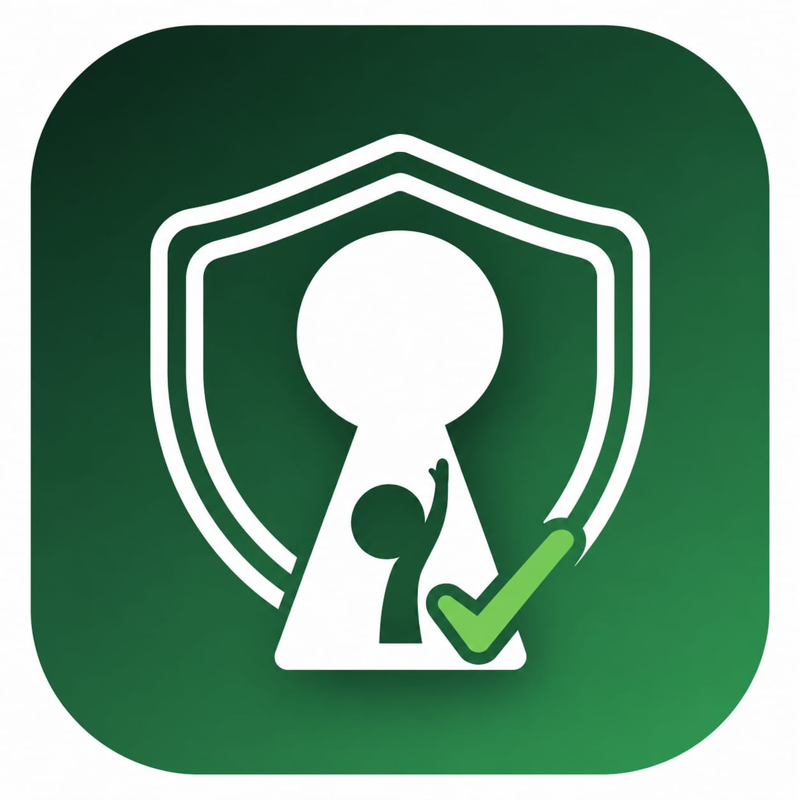

Secure Digital Safety & Authentication Platforms
← All projectsA cloud-based learner collection management platform that lets schools digitally verify learner collection through secure QR code identification, real-time parent approval and comprehensive audit trails — improving learner safety and modernising school collection procedures while reducing administrative workload.

Parents register authorised collectors. Security scans the learner's QR code. The parent receives an approval request and approves or declines it. The learner is released, and a digital audit trail is automatically stored.
Parents approve learner collections in real time.
parents.guardilink.co.zaUsed by security officers to verify learner collection.
security.guardilink.co.zaSchool administration portal for monitoring learner collections.
dashboard.guardilink.co.zaYes — parents can manage multiple authorised collectors.
Yes — parents receive notifications and approve collections directly from their smartphones.
Yes — every collection is permanently recorded with date, time and authorised collector information.
Yes — it complements access control, facial recognition, CCTV and visitor management systems.